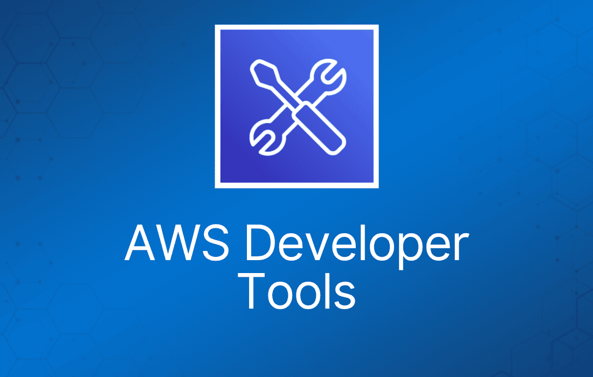
借助 AWS 开发者工具，你可以托管代码，快速高效地构建、测试和部署应用。AWS 提供了一整套工具，包括软件开发工具包（SDK）、代码编辑器，以及用于 DevOps 软件开发的持续集成和持续交付（CI/CD）服务。
AWS CodeArtifact
AWS CodeArtifact 是一项完全托管的构件仓库（artifact repository）服务。
你可以使用 AWS CodeArtifact 安全地存储、发布和共享软件包。
CodeArtifact 可以配置为自动从公共构件仓库获取软件包和依赖。
CodeArtifact 可与 Maven、Gradle、npm、yarn、twine、pip 和 NuGet 等常用包管理器和构建工具配合使用，便于集成到现有开发工作流中。
AWS CodeCommit
AWS CodeCommit 是一项完全托管的源代码控制服务，托管安全的基于 Git 的仓库。
Git 是开源的分布式源代码控制系统：
- 为所有代码、二进制文件、镜像和库提供集中式仓库。
- 跟踪和管理代码变更。
- 维护版本历史。
- 管理来自多个来源的更新。
- 支持协作。
它让团队能够在安全且高度可扩展的生态系统中轻松协作开发代码。
CodeCommit 让你无需运维自己的源代码控制系统，也无需担心其基础设施的扩展问题。
你可以用 CodeCommit 安全地存储从源代码到二进制文件的任何内容，它能与现有 Git 工具无缝配合。
为随时间发生的版本变更提供版本控制。
你可以轻松地提交（commit）、创建分支（branch）和合并（merge）代码。
CodeCommit 仓库是私有的。
CodeCommit 可以无缝扩展。
CodeCommit 与 Jenkins、CodeBuild 及其他 CI 工具集成。
CodeCommit 是 AWS 持续集成工具之一（CodeBuild 负责编译和测试代码）：
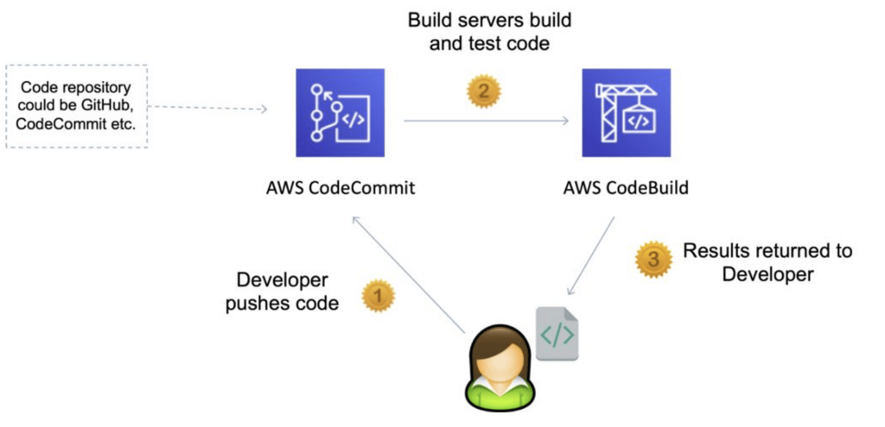
加密
你可以通过 HTTPS 或 SSH 与 AWS CodeCommit 之间传输文件。
仓库会通过 AWS Key Management Service（AWS KMS）使用客户专属密钥自动进行静态加密。
身份认证与访问控制
AWS CodeCommit 使用 AWS Identity and Access Management（IAM）来控制和监控谁可以访问数据，以及他们如何、何时、从哪里访问。
CodeCommit 还可通过 AWS CloudTrail 和 AWS CloudWatch 帮助你监控仓库。
身份认证
你需要配置 Git 客户端以与 CodeCommit 仓库通信。
作为配置的一部分，你需要提供 IAM 凭证，供 CodeCommit 对你进行身份认证。
IAM 支持三种类型的 CodeCommit 凭证：
- Git 凭证：由 IAM 生成的用户名和密码对，用于通过 HTTPS 与 CodeCommit 仓库通信。
- SSH 密钥：本地生成的公私钥对，可与 IAM 用户关联，用于通过 SSH 与 CodeCommit 仓库通信。
- AWS access key：可配合 AWS CLI 自带的 credential helper，通过 HTTPS 与 CodeCommit 仓库通信。
授权
使用 IAM policy 授权用户/角色访问仓库。
CodeCommit 只支持基于身份的策略（identity-based policy），不支持基于资源的策略（resource-based policy）。
你可以给 CodeCommit 资源附加标签，或在向 CodeCommit 发起的请求中传入标签。
要基于标签控制访问，可以在策略的condition 元素中使用 codecommit:ResourceTag/key-name、aws:RequestTag/key-name 或 aws:TagKeys 条件键来提供标签信息。
通知
你可以使用 AWS SNS、AWS Lambda 或 AWS CloudWatch Event 规则在 CodeCommit 中触发通知。
通知与 pull request 和评论事件相关——触发器与向分支推送代码或创建/删除分支相关。
通知（SNS / AWS Lambda）的使用场景：
- 删除分支。
- master 分支发生推送时触发。
- 通知外部构建系统。
- 触发 AWS Lambda 函数执行代码库分析。
CloudWatch Event 规则的使用场景：
- pull request 更新（创建/更新/删除/评论）时触发。
- 提交评论事件。
- CloudWatch Event 规则可以发送到 SNS Topic。
AWS CodeBuild
AWS CodeBuild 是一项完全托管的持续集成（CI）服务，负责编译源代码、运行测试，并产出可直接部署的软件包。
使用 CodeBuild，你无需预置、管理和扩展自己的构建服务器。
CodeBuild 持续扩展并并发处理多个构建，因此你的构建无需排队等待。
CodeBuild 是 Jenkins 等其他构建工具的替代方案。
CodeBuild 持续扩展并并发处理多个构建。
按构建完成所花的时间计费。
AWS CodeBuild 在预配置的构建环境中运行你的构建，这些环境包含完成任务所需的操作系统、编程语言运行时和构建工具（如 Apache Maven、Gradle、npm）。
可以通过使用自己的 Docker 镜像来扩展能力。
CodeBuild 与 KMS 集成用于构建产物加密，与 IAM 集成用于构建权限，与 VPC 集成用于网络安全，与 CloudTrail 集成用于记录 API 调用。
CodeBuild 可以从 GitHub、CodeCommit、CodePipeline、S3 等获取源代码。
构建指令可以定义在代码中（buildspec.yml）。
输出日志可以发送到 Amazon S3 和 AWS CloudWatch Logs。
有指标可用于监控 CodeBuild 的统计信息。
你可以使用 CloudWatch 告警检测构建失败并触发 SNS 通知。
构建可以在 CodePipeline 或 CodeBuild 自身中定义。
CodeBuild 的优势
由 AWS 完全托管。
按需使用，无缝扩展。
为多种编程语言提供预配置环境。
CodeBuild 核心概念
Build project（构建项目）—— 定义 CodeBuild 如何运行构建，包括以下设置：
- 源代码的位置。
- 要使用的构建环境。
- 要运行的构建命令。
- 构建输出的存储位置。
Build environment（构建环境）—— CodeBuild 用于构建的操作系统、语言运行时和工具。
Build Specification（构建规范）—— 描述 CodeBuild 运行构建所需的命令和设置集合的 YAML 文件。
预配置构建环境
AWS CodeBuild 为 Java、Python、Node.js、Ruby、Go、Android、.NET Core for Linux 和 Docker 提供构建环境。
自定义构建环境
你可以将自己的构建环境用于 AWS CodeBuild，例如 Microsoft .NET Framework。
你可以将构建所需的运行时和工具打包成 Docker 镜像，上传到公共 Docker Hub 仓库或 Amazon EC2 Container Registry（Amazon ECR）。
创建新的构建项目时，你可以指定 Docker 镜像的位置，CodeBuild 会拉取该镜像并将其用作构建项目的配置。
指定构建命令
你可以定义希望 AWS CodeBuild 执行的具体命令，例如安装构建工具包、运行单元测试和打包代码。
构建规范（buildspec）是一个 YAML 文件，让你选择构建各阶段要运行的命令及其他设置。
你可以覆盖默认的 buildspec 文件名和位置。
CodeBuild 为常见场景（如使用 Apache Maven、Gradle 或 npm 的构建）提供示例构建规范文件，帮助你快速上手。
下面的代码示例展示了一个 buildspec.yml 文件的内容，用于构建 Docker 镜像并将其推送到 Amazon Elastic Container Registry（ECR）：
version: 0.2 phases: install: runtime-versions: docker: 18 pre_build: commands: - echo Logging in to Amazon ECR... - $(aws ecr get-login --no-include-email --region $AWS_DEFAULT_REGION) build: commands: - echo Build started on `date` - echo Building the Docker image... - docker build -t $IMAGE_REPO_NAME:$IMAGE_TAG . - docker tag $IMAGE_REPO_NAME:$IMAGE_TAG $AWS_ACCOUNT_ID.dkr.ecr.$AWS_DEFAULT_REGION.amazonaws.com/$IMAGE_REPO_NAME:$IMAGE_TAG post_build: commands: - echo Build completed on `date` - echo Pushing the Docker image... - docker push $AWS_ACCOUNT_ID.dkr.ecr.$AWS_DEFAULT_REGION.amazonaws.com/$IMAGE_REPO_NAME:$IMAGE_TAG
考试提示：源代码根目录下必须有 buildspec.yml 文件。
你可以定义环境变量：
- 明文变量。
- 使用 SSM Parameter Store 保存的加密密钥（secure secrets）。
阶段（Phases）：
- Install：安装构建可能需要的依赖。
- Pre-build：构建前要执行的最后命令。
- Build：实际的构建命令。
- Post build：收尾工作（如输出 zip 文件）。
Artifacts（产物）：上传到 S3（使用 KMS 加密）。
Cache（缓存）：缓存到 S3 的文件（通常是依赖），供后续构建使用。
CodeBuild 本地构建
当你需要做超出日志文件分析的深度排错时使用。
可以使用 Docker 在本地计算机上运行 CodeBuild。
利用 CodeBuild agent 实现。
AWS CodeDeploy
CodeDeploy 是一项部署服务，可将应用部署自动化到 Amazon EC2 实例、本地实例、无服务器 Lambda 函数或 Amazon ECS 服务。
你几乎可以部署任意类型的应用内容，包括：
- 无服务器 AWS Lambda 函数。
- Web 和配置文件。
- 可执行文件。
- 软件包。
- 脚本。
- 多媒体文件。
CodeDeploy 可以部署运行在服务器上、存储在 Amazon S3 bucket、GitHub 仓库或 Bitbucket 仓库中的应用内容。
CodeDeploy 也可以部署无服务器 Lambda 函数。
使用 CodeDeploy 前无需修改现有代码。
可用于将应用自动部署到大量 EC2 实例。
类似的开源工具包括 Ansible、Terraform、Chef、Puppet 等。
可与多种 CI/CD 工具集成，包括 Jenkins、GitHub、Atlassian、AWS CodePipeline，以及 Ansible、Puppet、Chef 等配置管理工具。
CodeDeploy 是完全托管的服务。
可以灵活定义各种类型的部署。
CodeDeploy 可以连接到 CodePipeline 并使用其中的产物。
CodeDeploy 可以复用现有的安装工具，适用于任何应用，并支持与 Auto Scaling 集成。
CodeDeploy 应用
AWS CodeDeploy 应用包含要部署什么以及如何部署的信息。
需要选择计算平台：
- EC2/本地（On-premises）。
- AWS Lambda。
- Amazon ECS。
EC2/On-Premises：
- Amazon EC2 云实例、本地服务器，或两者兼有。
- 使用 EC2/On-Premises 计算平台的部署通过就地（in-place）或蓝绿（blue/green）部署类型管理流量引导到实例的方式。
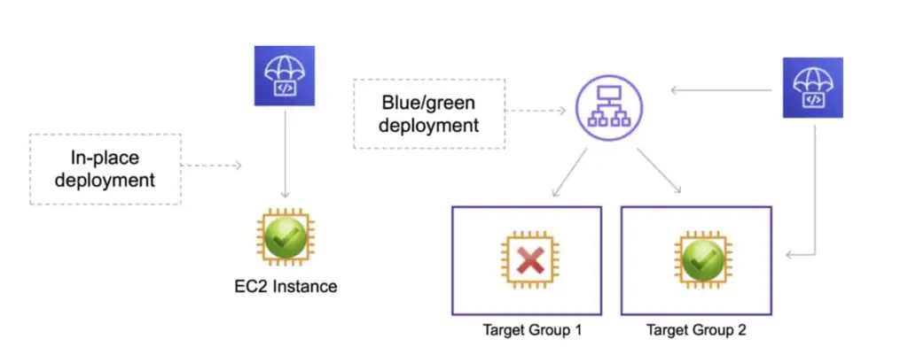
AWS Lambda：
- 用于部署由更新版本 Lambda 函数组成的应用。
- 通过选择金丝雀（canary）、线性（linear）或一次性（all-at-once）配置，你可以管理部署期间流量切换到更新后 Lambda 函数版本的方式。
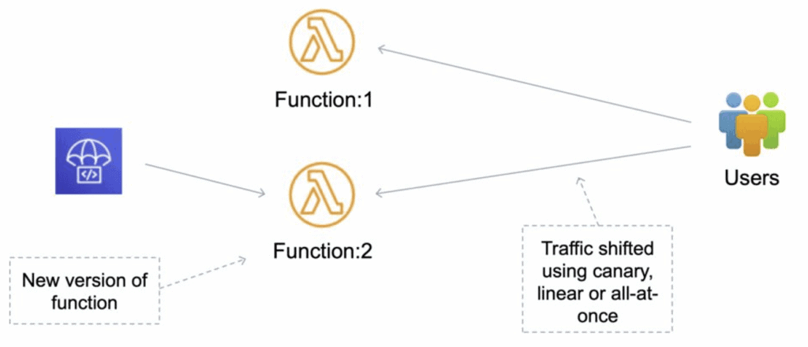
Amazon ECS：
- 用于将 Amazon ECS 容器化应用部署为一个任务集（task set）。
- CodeDeploy 通过将应用的更新版本安装为新的替换任务集来执行蓝绿部署。
- CodeDeploy 将生产流量从原始应用任务集重新路由到替换任务集。
- 部署成功后，原始任务集会被终止。
- 通过选择金丝雀、线性或一次性配置，你可以管理部署期间流量切换到更新任务集的方式。
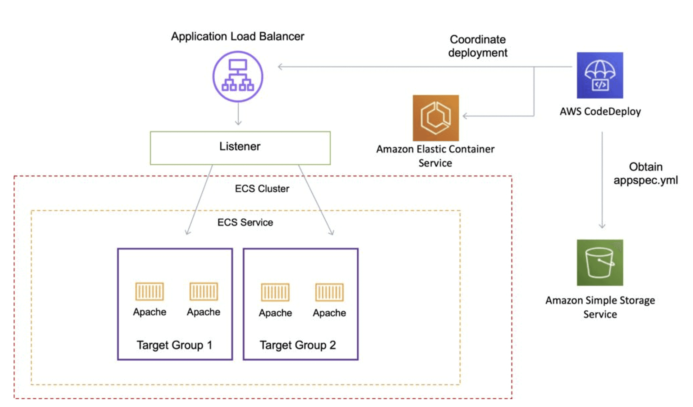
部署组（Deployment Group）
每个部署组属于一个应用，并指定：
- 部署配置（deployment configuration）—— 一组部署规则以及部署期间使用的成功/失败条件。
- 部署事件的通知配置。
- 用于监控部署的 Amazon CloudWatch 告警。
- 部署回滚配置。
部署类型（Deployment Type）
CodeDeploy 提供两种部署类型选项——就地（in-place）和蓝绿（blue/green）。
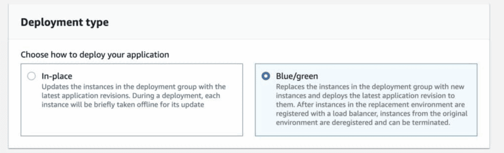
就地部署（In-place deployment）：
- 部署组中每个实例上的应用会被停止，安装最新的应用修订版本，然后启动并验证新版本应用。
- 可以使用负载均衡器，使每个实例在部署期间注销，部署完成后再恢复服务。
- 只有使用 EC2/On-Premises 计算平台的部署才能使用就地部署。
考试提示：AWS Lambda 和 Amazon ECS 部署不能使用就地部署类型。
EC2/On-Premises 计算平台上的蓝绿部署：
- 部署组中的实例（原始环境）会被另一组实例（替换环境）取代，步骤如下：
- 为替换环境预置实例。
- 在替换实例上安装最新的应用修订版本。
- 可选的等待时间，用于应用测试和系统验证等活动。
- 替换环境中的实例注册到 Elastic Load Balancing 负载均衡器，流量被重新路由到这些实例。
- 原始环境中的实例被注销，可以终止，也可以继续运行作其他用途。
注意：如果使用 EC2/On-Premises 计算平台，请注意蓝绿部署仅适用于 Amazon EC2 实例。
AWS Lambda 计算平台上的蓝绿部署：
- 流量从当前无服务器环境切换到使用更新后 Lambda 函数版本的环境。
- 你可以指定执行验证测试的 Lambda 函数，并选择流量切换的方式。
- 所有 AWS Lambda 计算平台部署都是蓝绿部署。
- 因此无需指定部署类型。
Amazon ECS 计算平台上的蓝绿部署：
- 流量从 Amazon ECS 服务中包含原始版本应用的任务集，切换到同一服务中的替换任务集。
- 可以通过部署配置将流量切换设置为线性或金丝雀方式。
- 使用指定负载均衡器监听器的协议和端口重新路由生产流量。
- 部署期间，可以使用测试监听器（test listener）向替换任务集提供流量，同时运行验证测试。
在 Amazon EC2 上部署：
CodeDeploy 通过标签或 Auto Scaling 组名称识别 EC2 实例。
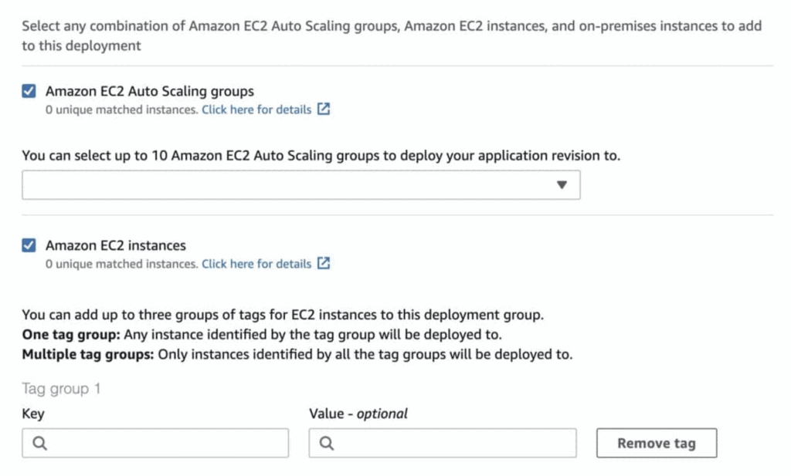
每个 Amazon EC2 实例必须附加正确的 IAM instance profile。
每个实例上必须安装并运行 CodeDeploy agent。
agent 会持续轮询是否有工作要做。
CodeDeploy 发送 appspec.yml 文件（该文件必须位于源代码根目录）。
应用代码从 GitHub 或 S3 拉取。
EC2 将运行部署指令。
CodeDeploy agent 会报告实例上部署的成功/失败结果。
EC2 实例按部署组分组（如 dev、test、prod）。
注意：CodeDeploy 不预置资源——它部署的是应用，而不是 EC2 实例。
AppSpec 文件
应用规范文件（AppSpec file）是 CodeDeploy 用来管理部署的 YAML 格式或 JSON 格式文件。
AppSpec 文件定义了你希望 AWS CodeDeploy 执行的部署操作。
EC2/On-Premises 部署的 AppSpec 文件名必须是 appspec.yml；Amazon ECS 或 AWS Lambda 部署的 AppSpec 文件名必须是 appspec.yaml 或 appspec.yml。
下面的代码示例展示了在 Amazon EC2 实例上部署 WordPress 的 appspec.yml 文件格式：
version: 0.0 os: linux files: - source: / destination: /var/www/html/WordPress hooks BeforeInstall: - location: scripts/install_dependencies.sh timeout: 300 runas: root AfterInstall: - location: scripts/change_permissions.sh timeout: 300 runas: root ApplicationStart: - location: scripts/start_server.sh - location: scripts/create_test_db.sh timeout: 300 runas: root ApplicationStop: - location: scripts/stop_server.sh timeout: 300 runas: root
files 段指定如何从 S3 / GitHub 获取并复制到文件系统。
hooks 是部署新版本时要运行的一组指令（hook 有超时设置）。
用于 ECS 的 AppSpec.yaml
Amazon ECS 任务定义文件必须在 AppSpec 文件的 TaskDefinition 指令中以其 ARN 指定。
替换任务集中用于在部署期间接收 Application Load Balancer 或 Network Load Balancer 重新路由流量的容器和端口，必须在 AppSpec 文件的 LoadBalancerInfo 指令中指定。
下面是用于部署 Amazon ECS 服务的 YAML 格式 AppSpec 文件示例：
version: 0.0 Resources: - TargetService: Type: AWS::ECS::Service Properties: TaskDefinition: "arn:aws:ecs:us-east-1:111222333444:task-definition/my-task-definition-family-name:1" LoadBalancerInfo: ContainerName: "SampleApplicationName" ContainerPort: 80 # Optional properties PlatformVersion: "LATEST" NetworkConfiguration: AwsvpcConfiguration: Subnets: ["subnet-1234abcd","subnet-5678abcd"] SecurityGroups: ["sg-12345678"] AssignPublicIp: "ENABLED" Hooks: - BeforeInstall: "LambdaFunctionToValidateBeforeInstall" - AfterInstall: "LambdaFunctionToValidateAfterTraffic" - AfterAllowTestTraffic: "LambdaFunctionToValidateAfterTestTrafficStarts" - BeforeAllowTraffic: "LambdaFunctionToValidateBeforeAllowingProductionTraffic" - AfterAllowTraffic: "LambdaFunctionToValidateAfterAllowingProductionTraffic"
注意：每种计算平台可用的 hook 不同，此处并未列出全部。关于每种计算平台可用的 hook 的更多信息，请阅读 AWS 文档（点此查看）。
用于 AWS Lambda 的 AppSpec.yaml
用于 AWS Lambda 的 AppSpec.yaml 文件格式如下：
version: 0.0 Resources: - myLambdaFunction: Type: AWS::Lambda::Function Properties: Name: "myLambdaFunction" Alias: "myLambdaFunctionAlias" CurrentVersion: "1" TargetVersion: "2" Hooks: - BeforeAllowTraffic: "LambdaFunctionToValidateBeforeTrafficShift" - AfterAllowTraffic: "LambdaFunctionToValidateAfterTrafficShift"
可用的 hook 如下：
- BeforeAllowTraffic —— 指定在流量路由到新部署的 Lambda 函数之前要运行的任务或函数。
- AfterAllowTraffic —— 指定在流量路由到新部署的 Lambda 函数之后要运行的任务或函数。
修订版本（Revision）
更新到新版本时，Revision 包含部署新版本所需的一切：AppSpec 文件、应用文件、可执行文件和配置文件。
就地部署（仅限 EC2）
工作流程如下：
- 首先，在本地开发机或类似环境中创建可部署内容，然后添加应用规范文件（AppSpec file）。AppSpec 文件是 CodeDeploy 特有的，定义了你希望 CodeDeploy 执行的部署操作。将可部署内容和 AppSpec 文件打包成归档文件，然后上传到 Amazon S3 bucket 或 GitHub 仓库。这个归档文件称为应用修订版本（application revision，简称 revision）。
- 接着，向 CodeDeploy 提供部署信息，例如从哪个 Amazon S3 bucket 或 GitHub 仓库拉取修订版本，以及部署到哪一组 Amazon EC2 实例。CodeDeploy 将一组 Amazon EC2 实例称为部署组（deployment group）。部署组包含单独打了标签的 Amazon EC2 实例、Amazon EC2 Auto Scaling 组中的实例，或两者兼有。
每次你成功上传一个想要部署到部署组的新应用修订版本时，该包就会被设置为部署组的目标修订版本（target revision）。换句话说，当前被指定为部署目标的应用修订版本就是目标修订版本，也是自动部署时拉取的修订版本。 - 然后，每个实例上的 CodeDeploy agent 轮询 CodeDeploy，确定从指定的 Amazon S3 bucket 或 GitHub 仓库拉取什么内容以及何时拉取。
- 最后，每个实例上的 CodeDeploy agent 从 Amazon S3 bucket 或 GitHub 仓库拉取目标修订版本，并按照 AppSpec 文件中的指令将内容部署到实例。
CodeDeploy 会记录你的部署，你可以获取部署状态、部署配置参数、实例健康状况等信息。
蓝绿部署（Blue/green deployments）
蓝绿部署用于在更新应用时，最大程度减少新版本应用变更造成的中断。CodeDeploy 会在旧版本旁边预置新版本应用，然后再重新路由生产流量。
AWS Lambda：流量从 Lambda 函数的一个版本切换到同一函数的新版本。
Amazon ECS：流量从 Amazon ECS 服务中的任务集切换到同一 Amazon ECS 服务中更新后的替换任务集。
EC2/On-Premises：流量从原始环境的一组实例切换到替换环境的一组实例。
注意：所有 AWS Lambda 和 Amazon ECS 部署都是蓝绿部署。EC2/On-Premises 部署可以是就地部署或蓝绿部署。
对于 Amazon ECS 和 AWS Lambda，部署期间有三种流量切换方式：
- 金丝雀（Canary）：流量分两次切换。你可以从预定义的金丝雀选项中选择，指定第一次切换到更新后 Amazon ECS 任务集 / Lambda 函数的流量百分比，以及第二次切换剩余流量之前等待的分钟数。
- 线性（Linear）：流量以相等增量切换，每次增量之间间隔相等分钟数。你可以从预定义的线性选项中选择，指定每次增量切换的流量百分比和每次增量之间的分钟数。
- 一次性（All-at-once）：所有流量一次性从原始 Amazon ECS 任务集 / Lambda 函数切换到更新后的 Amazon ECS 任务集 / Lambda 函数。
对于 Amazon EC2，你可以选择替换环境的指定方式：
复制现有 Amazon EC2 Auto Scaling 组：
- 在蓝绿部署期间，CodeDeploy 会在部署过程中为替换环境创建实例。
- 使用该选项时，CodeDeploy 以你指定的 Amazon EC2 Auto Scaling 组作为替换环境的模板，包括相同数量的运行实例和许多其他配置选项。
手动选择实例：
- 你可以通过 Amazon EC2 实例标签、Amazon EC2 Auto Scaling 组名称或两者，指定计入替换环境的实例。
- 如果选择该选项，直到创建部署时才需要指定替换环境的实例。
AWS CodePipeline
AWS CodePipeline 是一项完全托管的持续交付服务，帮助你自动化发布流水线，实现快速可靠的应用和基础设施更新。
CodePipeline 根据你定义的发布模型，在每次代码变更时自动执行发布流程的构建、测试和部署阶段。
CodePipeline 让你能够快速、可靠地交付功能和更新。
你可以轻松地将 AWS CodePipeline 与 GitHub 等第三方服务或自己的自定义插件集成。使用 AWS CodePipeline 只需按实际用量付费。
没有预付费，也没有长期承诺。
使用用户定义的软件发布流程。
快速可靠地发布新功能和缺陷修复。
CodePipeline 在流水线的每个阶段为许多 AWS 和第三方软件提供工具集成，包括：
- 源（Source）阶段 —— S3、CodeCommit、GitHub、ECR、Bitbucket Cloud（beta）。
- 构建（Build）—— CodeBuild、Jenkins。
- 部署（Deploy）阶段 —— CloudFormation、CodeDeploy、ECS、Elastic Beanstalk、AWS Service Catalog、S3。
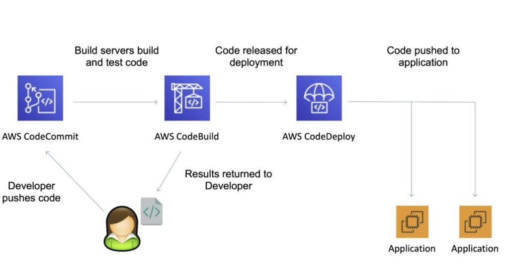
CodePipeline 核心概念
流水线（Pipeline）：
- 描述软件变更如何走完发布流程的工作流。
产物（Artifact）：
- 流水线中各操作和阶段要处理的文件或变更。
- 每个流水线阶段都可以产生“artifact”。
- artifact 会被传递、存储在 Amazon S3 中，然后传递给下一阶段。
阶段（Stage）：
- 流水线被划分为多个阶段，例如构建阶段、部署阶段。
- 每个阶段可以有顺序执行和/或并行执行的操作。
- 阶段示例：构建、测试、部署、负载测试等。
- 可以在任何阶段定义手动审批。
操作（Action）：
- 阶段至少包含一个操作，这些操作对 artifact 执行某些处理，并以 artifact 作为输入、输出或两者兼有。
过渡（Transition）：
- 流水线内从一个阶段进入下一个阶段的过程。
下图展示了一条带手动审批阶段的流水线：
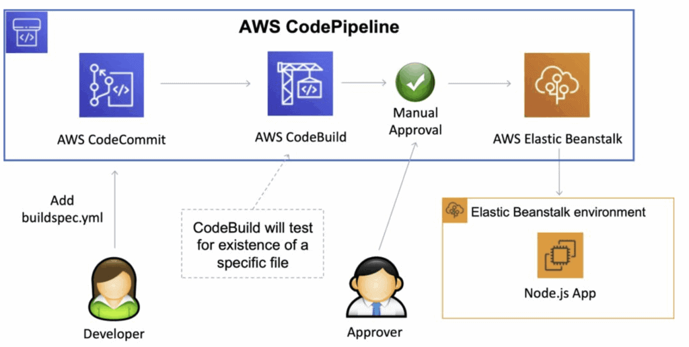
推送到代码仓库的每一次代码变更都会自动进入工作流，并触发流水线每个阶段定义的一组操作。
CodePipeline 的状态变化会进入 AWS CloudWatch Events，可用于创建 SNS 通知。
通知内容可以包括失败的流水线或被取消的阶段。
如果 CodePipeline 某个阶段失败，流水线会停止，你可以在控制台中查看信息。
你还可以使用 AWS CloudTrail 审计 API 调用。
如果 CodePipeline 无法执行某个操作，请检查附加到流水线的 IAM 服务角色是否具有正确权限。
AWS CodeStar
AWS CodeStar 让你能够在 AWS 上快速开发、构建和部署应用。AWS CodeStar 提供统一的用户界面，让你可以在一个地方轻松管理软件开发活动。
使用 AWS CodeStar，你可以在几分钟内搭建好整个持续交付工具链，更快地开始发布代码。
AWS CodeStar 让整个团队能够安全地协同工作，你可以轻松管理访问权限，为项目添加所有者（owner）、贡献者（contributor）和查看者（viewer）。
每个 AWS CodeStar 项目都带有项目管理仪表盘，包括由 Atlassian JIRA Software 提供支持的集成问题跟踪功能。
通过 AWS CodeStar 项目仪表盘，你可以轻松跟踪整个软件开发过程的进度，从待办工作项到团队最近的代码部署。
考试提示：如果考试场景需要统一的开发工具链，并提到团队成员之间的协作、同步以及 CI/CD 流水线的集中管理，答案应该是 CodeStar，而不是 CodePipeline 或 CodeCommit。
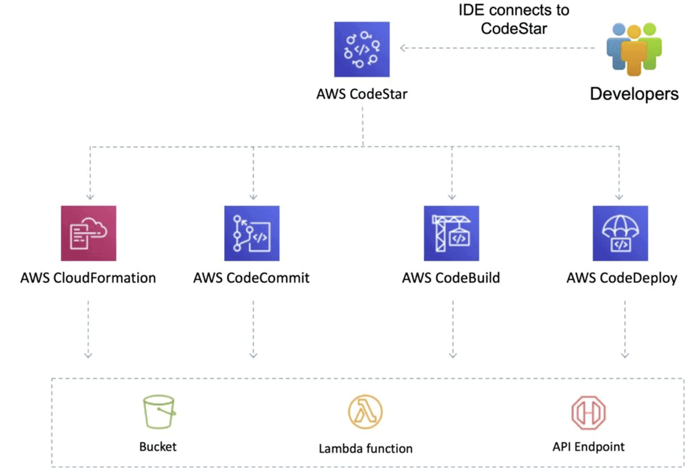
优势与功能
面向各种项目和编程语言的项目模板：
- 借助 AWS CodeStar 项目模板，你可以轻松开发各种应用，包括网站、Web 应用、Web 服务和 Alexa 技能。
- AWS CodeStar 项目模板包含受支持编程语言的入门代码，包括 Java、JavaScript、PHP、Ruby 和 Python。
在团队中安全协作：
- AWS CodeStar 让你能够以安全的方式在团队中协作。
- AWS CodeStar 简化为团队设置项目访问权限的过程，因为它提供遵循 AWS 安全最佳实践的内置基于角色的策略。
- 你可以轻松管理项目所有者、贡献者和查看者的访问权限，无需为每个服务手动配置策略。
支持多种集成开发环境（IDE）：
- 与基于云的 AWS Cloud9 IDE 原生集成。
- 也可以选择多种流行 IDE，如 Microsoft Visual Studio 和 Eclipse。
CodeStar 与多个其他 AWS 服务集成，包括：
- CodeCommit。
- CodeBuild。
- CodeDeploy。
- CodePipeline。
- CloudWatch。
定价
AWS CodeStar 本身不额外收费。
你只需为 CodeStar 项目中使用的 AWS 资源（如 EC2 实例、Lambda 执行或 S3 bucket）付费。
按实际用量付费；没有最低费用，也没有预付承诺。
AWS Cloud9
AWS Cloud9 是基于云的集成开发环境（IDE），让你只用浏览器就能编写、运行和调试代码。
它包含代码编辑器、调试器和终端。
Cloud9 预装了流行编程语言（包括 JavaScript、Python、PHP 等）所需的必备工具，因此你无需安装文件或配置开发机即可开始新项目。
由于 Cloud9 IDE 基于云，你可以在办公室、家里或任何有网络连接的机器上处理项目。
Cloud9 还为无服务器应用开发提供了无缝体验，让你能够轻松定义资源、调试，并在无服务器应用的本地与远程执行之间切换。
使用 Cloud9，你可以快速与团队共享开发环境，实现结对编程并实时跟踪彼此的输入。
优势与功能
只用浏览器写代码：
- AWS Cloud9 让你可以灵活地在托管的 Amazon EC2 实例或任何支持 SSH 的现有 Linux 服务器上运行开发环境。
- 这意味着你可以只用浏览器编写、运行和调试应用，无需安装或维护本地 IDE。
- Cloud9 代码编辑器和集成调试器包含实用的省时功能，如代码提示、代码补全和单步调试。
- Cloud9 终端提供基于浏览器的 shell 体验，让你可以安装额外软件、执行 git push 或输入命令。
实时协同编码：
- AWS Cloud9 让代码协作变得简单。
- 只需几次点击即可与团队共享开发环境并结对编程。
- 协作时，团队成员可以实时看到彼此的输入，并在 IDE 内即时聊天。
轻松构建无服务器应用：
- AWS Cloud9 让编写、运行和调试无服务器应用变得简单。
- 它预配置了无服务器开发所需的全部 SDK、库和插件。
- Cloud9 还提供本地测试和调试 AWS Lambda 函数的环境。
- 这让你可以直接迭代代码，节省时间并提高代码质量。
直接通过终端访问 AWS：
- AWS Cloud9 自带终端，拥有托管开发环境的 Amazon EC2 实例的 sudo 权限，并预配置了已通过身份认证的 AWS Command Line Interface。
- 这让你能够快速运行命令并直接访问 AWS 服务。
快速开始新项目：
- AWS Cloud9 让你可以轻松开始新项目。
- Cloud9 的开发环境预装了 40 多种编程语言的工具链，包括 Node.js、JavaScript、Python、PHP、Ruby、Go 和 C++。
- 由于无需为开发机安装或配置文件、SDK 和插件，你可以在几分钟内开始为流行的应用栈编写代码。
- 由于 Cloud9 基于云，你可以轻松维护多个开发环境，隔离各项目的资源。
Amazon CodeGuru
Amazon CodeGuru 提供智能建议，用于改进代码质量，并找出应用中开销最大的代码行。
你可以将 CodeGuru 集成到现有软件开发工作流中，自动化代码评审。
CodeGuru 持续监控应用在生产环境中的性能。
就如何改进代码质量、应用性能并降低总体成本提供建议。
安全检测
CodeGuru 可以检测许多安全问题，例如：
- OWASP Top 10：检查顶级 Web 应用安全风险，如失效的访问控制、注入和数据完整性失败
- AWS API 安全最佳实践：检查 Amazon Elastic Compute Cloud 和 AWS Key Management Service 的 API 安全性
- AWS 安全最佳实践（AWS 加密按 Amazon 标准实现）：将 Amazon 内部的安全专业知识应用到你的代码
- Java 加密库最佳实践：检查 Javax.Crypto.Cipher 是否被正确初始化和调用
- Python 加密库最佳实践：检查是否使用了正确版本的 Python 哈希和加密算法
- 安全的 Web 应用：检查应用相关的安全问题，如 LDAP 注入
- 敏感信息泄露：检查是否有个人或敏感信息泄露（例如：以明文记录 AWS 账户凭证）
- 输入验证：检查来自不可信来源的畸形或恶意数据
密钥检测（Secrets Detection）
CodeGuru 提供密钥检测功能，可发现硬编码在代码仓库或配置文件中的密钥。
可检测 API key、密码、SSH 密钥、访问令牌、数据库连接字符串等。
代码质量
CodeGuru Reviewer 识别代码中的质量问题。
确保遵循最佳实践，例如正确使用 AWS API。
为 Java 和 Python 等编程语言提供最佳实践检测。
AWS X-Ray
AWS X-Ray 帮助开发者分析和调试生产环境中的分布式应用，例如基于微服务架构构建的应用。
借助 X-Ray，你可以了解应用及其底层服务的表现，从而定位并排查性能问题和错误的根本原因。
X-Ray 提供请求在应用中流转的端到端视图，并展示应用底层组件的拓扑图。
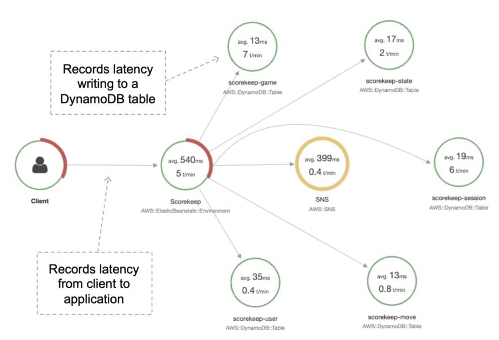
你可以用 X-Ray 分析开发中和生产中的应用，从简单的三层应用到由数千个服务组成的复杂微服务应用均可。
AWS X-Ray 支持运行在以下平台的应用：
- Amazon Elastic Compute Cloud（Amazon EC2）。
- Amazon EC2 Container Service（Amazon ECS）。
- AWS Lambda。
- AWS Elastic Beanstalk。
在 EC2 / 本地环境上使用 X-Ray：
- Linux 系统必须运行 X-Ray daemon。
- EC2 使用 IAM instance role；本地实例使用其他 AWS 凭证。
在 Lambda 上使用 X-Ray：
- 确保在 Lambda 配置中勾选 X-Ray 集成（Lambda 会运行 daemon）。
- IAM role 使用 Lambda 的角色。
在 Elastic Beanstalk 上使用 X-Ray：
- 在 Elastic Beanstalk 控制台中设置配置。
- 或使用 Beanstalk 扩展（.ebextensions/xray-daemon.config）
在 ECS/EKS/Fargate 上使用 X-Ray：
- 创建一个运行 daemon 的 Docker 镜像，或使用官方 X-Ray Docker 镜像。
- 确保端口映射和网络设置正确，并定义好 IAM task role。
X-Ray SDK 会捕获发往 MySQL 和 PostgreSQL 数据库（自建、Amazon RDS、Amazon Aurora）以及 Amazon DynamoDB 的请求元数据。
它还会捕获发往 Amazon Simple Queue Service 和 Amazon Simple Notification Service 的请求元数据。
X-Ray SDK 安装在你的应用中，将数据转发给 X-Ray daemon，daemon 再转发给 X-Ray API。
然后你可以在 X-Ray 控制台中可视化正在发生的事情。
X-Ray SDK 提供：
- 拦截器（interceptor），向代码中添加对传入 HTTP 请求的追踪。
- 客户端处理器（client handler），对应用用来调用其他 AWS 服务的 AWS SDK 客户端进行插桩（instrument）。
- 一个 HTTP 客户端，用于插桩对其他内部和外部 HTTP Web 服务的调用。
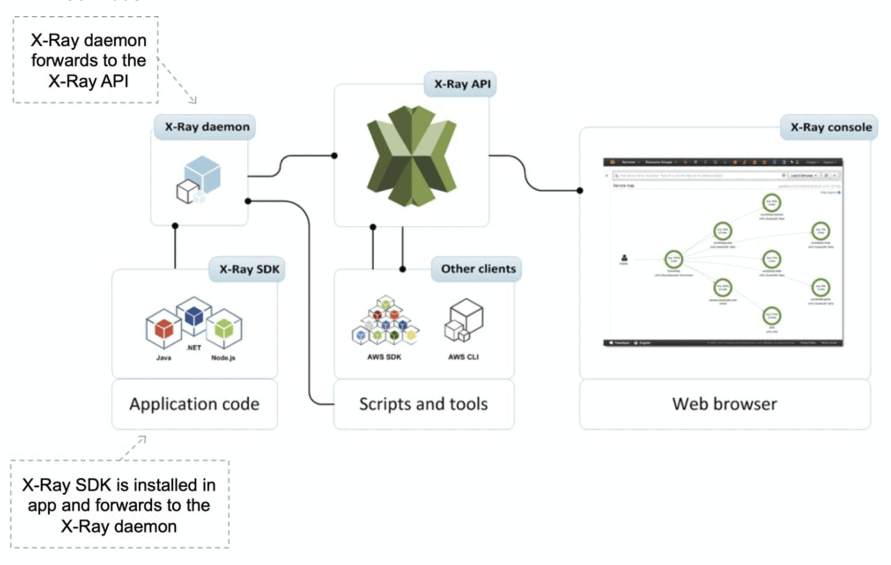
AWS X-Ray 支持对使用 Node.js、Java 和 .NET 编写的应用进行追踪。
代码必须经过插桩（instrument）才能使用 AWS X-Ray SDK。
IAM role 必须配置正确才能向 X-Ray 发送 trace。
X-Ray daemon agent 支持配置跨账户发送 trace：
- 确保 IAM 权限正确——agent 将代入（assume）一个角色。
- 这样就可以用一个集中账户收集所有应用的追踪数据。
X-Ray 关键术语
Trace（追踪）：
- 一个 X-Ray trace 是共享同一 trace ID 的一组数据点。
Segment（分段）：
- 一个 X-Ray segment 封装了分布式应用中单个组件（例如授权服务）的所有数据点。
- segment 以注解（annotation）形式包含系统定义和用户定义的数据，并由一个或多个代表该服务发出的远程调用的子分段（subsegment）组成。
Subsegment（子分段）：
- subsegment 提供更细粒度的计时信息，以及应用为完成原始请求而发出的下游调用的详情。
- subsegment 可以包含对 AWS 服务、外部 HTTP API 或 SQL 数据库调用的更多细节。
- 你甚至可以定义任意 subsegment，对应用中的特定函数或代码行进行插桩。
- 对于不发送自己 segment 的服务（如 Amazon DynamoDB），X-Ray 使用 subsegment 在服务图上生成推断的 segment（inferred segment）和下游节点。
- 这样你就能看到所有下游依赖，即使它们不支持追踪，或者位于外部。
Annotation（注解）：
- X-Ray annotation 是与 segment 关联的系统定义或用户定义数据。
- 系统定义的注解包括 AWS 服务添加到 segment 的数据，而用户定义的注解是开发者添加到 segment 的元数据。
- 一个 segment 可以包含多个注解。
- 它们是键值对，用于索引 trace 并配合筛选器使用。
- 使用注解在 segment 或 subsegment 上记录你希望被索引以便搜索的信息。
采样（Sampling）：
- 为了提供高性能且经济高效的体验，X-Ray 不会为发往应用的每个请求都收集数据。
- 它只为统计上具有代表性数量的请求收集数据。
- X-Ray 不应用作审计或合规工具，因为它不保证数据完整性。
元数据（Metadata）：
- 键值对，不索引，也不能用于搜索。
考试提示：记住：注解可用于向 segment 和 subsegment 添加系统或用户定义的数据，这些数据会被索引以供搜索。元数据不会被索引，也不能用于搜索。
注解与筛选
AWS X-Ray 让你可以为应用中特定组件或服务发出的数据添加注解。
你可以借此附加特定于业务的元数据，帮助更好地诊断问题。
你还可以按注解值、平均延迟、HTTP 响应状态、时间戳、使用的数据库表等属性查看和筛选 trace 数据。
X-Ray SDK
X-Ray SDK 安装在你的应用中，将数据转发给 X-Ray daemon，daemon 再转发给 X-Ray API。
然后你可以在 X-Ray 控制台中可视化正在发生的事情。
X-Ray SDK 提供：
- 拦截器（interceptor），向代码中添加对传入 HTTP 请求的追踪。
- 客户端处理器（client handler），对应用用来调用其他 AWS 服务的 AWS SDK 客户端进行插桩。
- 一个 HTTP 客户端，用于插桩对其他内部和外部 HTTP Web 服务的调用。
代码必须经过插桩才能使用 AWS X-Ray SDK。
IAM role 必须配置正确才能向 X-Ray 发送 trace。
AWS Fault Injection Simulator
AWS Fault Injection Simulator 是在 AWS 上运行故障注入实验的完全托管服务。
让改进应用的性能、可观测性和韧性变得更容易。
故障注入实验用于混沌工程（chaos engineering）——通过在测试或生产环境中制造破坏性事件来给应用施加压力的做法。
故障注入实验帮助团队创造真实世界的条件，发现分布式系统中难以察觉的隐藏 bug、监控盲点和性能瓶颈。